Text and images Copyright (C) 2002 Eric R. Jeschke and may not be used without permission of the author.
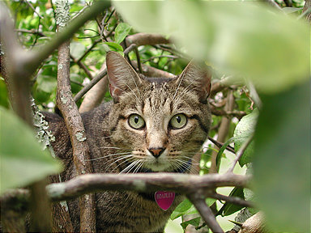
In this tutorial I'll show you how to salvage an image that has blown out highlights. This is a problem that is familiar to photographers shooting transparency film,
which has an effective contrast range of about 5 stops. If you are not careful with your exposure you can easily lose all detail in your highlight areas,
with no way to get it back: they "blow out" to clear (white).
Many digital cameras have similar issues, especially consumer level ones. With these kinds of cameras it is worth paying attention to the old adage: "expose for the highlights".
I find that if I treat my digital camera as if I were shooting slide film the exposure rules are about the same.
The basic technique is to graft matching areas of the image into the burned out parts using the clone tool and then to use several additional tools to blend the seams of the cloned areas.
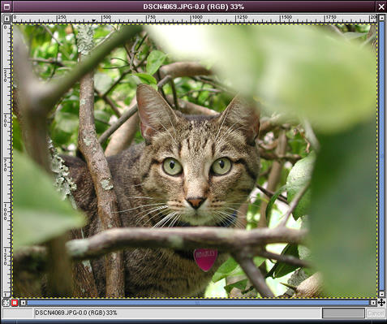
Here is the original image.
I saw my cat go up into a lemon tree. Thinking there might be an interesting shot there, I grabbed the camera and shot him from several angles,
including this shot through a hole in the foliage. When I saw the image later on the monitor I realized what a nice natural three-dimensional frame I had.
The camera was set on automatic exposure. While it did a great job of exposing for the dark cat in the shade of the tree,
there are several spots where specular reflections of the bright sunshine overhead blew out. The worst and most noticable is the one off of the leaf at the top of the image.
There are some less objectionable, but bothersome burned out areas to the lower right of the cat's face.
Great image...could I rescue it?

Using the color picker tool, you can see that there is no usable information left in the highlight. Pure white, of course, is 255/255/255.
If there had been some detail left here I might have tried a variation on the contrast masking technique or the "digital" neutral density filter first.


The first step is to create a channel mask to be able to mask out parts of the image we don't want to affect. I'll use this for the main "pixel graft".
Duplicate the original image (<Image>Image->Duplicate or Ctrl+D).
In the duplicate, select <Image>Image->Colors->Threshold. In the threshold dialog box, drag to select the very right
(extreme highlights) portion of the histogram. Alternatively, you can type in the lower bound, as I did here (250).
This causes all the pixels in the image from 250-255 to go white and all the others to go black.
 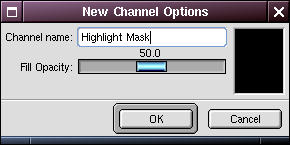
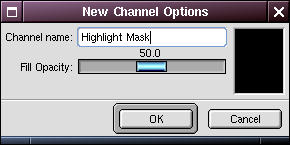
 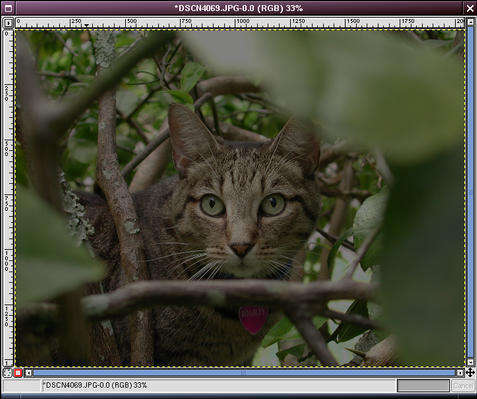
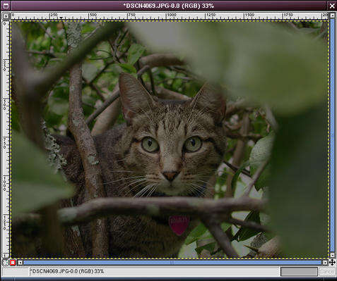
Go back to the original image, and bring up the Layers and Channels dialog (<Image>Layers->Layers, Channels & Paths, or Ctrl+L). Click on the Channels tab and add a new channel by clicking on the new channel button.
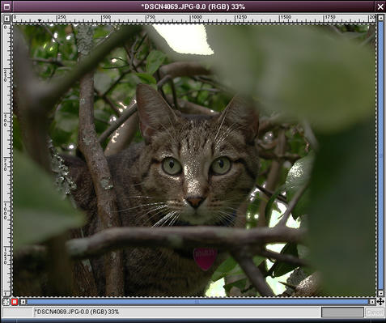 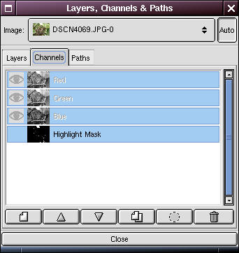
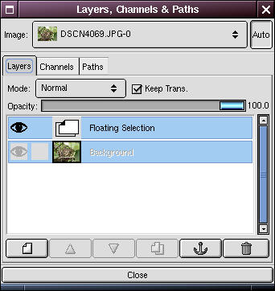

Go back to the threshold image, <Image>Select->All (Ctrl+A) and <Image>Edit->Copy (Ctrl+C).
<Image>Edit->Paste it into the original image (it should go into the new channel).
Click on the Layers tab and anchor the floating selection.
You can close the threshold image now.


Click on the Channels tab again, and right click on the new channel and select Channel to Selection (Ctrl+S).
You may want to also click on the eye beside the channel to turn off visibility of the channel.
Now feather the selection (<Image>Select->Feather). I used a value of 15 pixels or so in this case.
Finally (important!), click back on the Layers tab and select the Background layer, so the selection and further operations will apply to the image and not the channel mask.
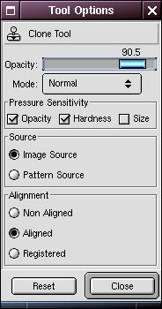


Now the real work begins.
We've lost these pixels entirely, so we're going to have to graft some on from somewhere nearby using the clone tool.
A description of how to use this tool is beyond the scope of this document
(see the GIMP savvy to find out more about this tool).
I cloned from the light part of the leaf just beyond the dark band to the right of the blown out area. This gave me a similar light-dark-light transition.
You can see the clone tool options and the brush (<Image>Dialogs->Brushes) I selected (at right).
Zoom in and clone until you have the area filled with a realistic facimile of the missing detail. Most likely it will have a noticable transition around the edges.
That's OK, we'll fix that up next.
<Image>Select->None and zoom out to inspect your work.


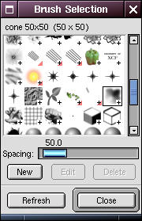 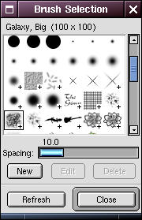
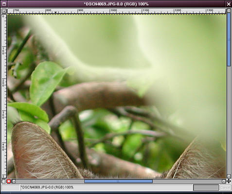 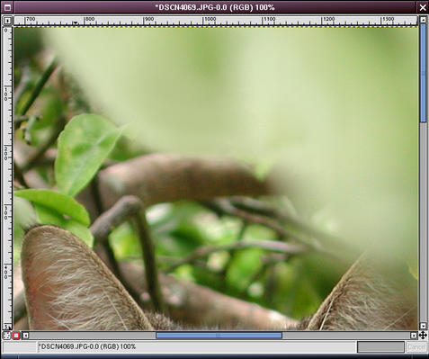
This step is where the most difficult work occurs. I must by necessity abbreviate this step, since it involves iterations of applying the following tools:
 smudge
smudge clone
clone airbrush (w/color picker)
airbrush (w/color picker) convolve (blur)
convolve (blur)
Basically, smudge is your friend after a serious cloning job like this to clean up the transitions. Smudge around all the edges of the clone.
The clone tool can also be used again here and there for "mop-up" work.
I use the airbrush and convolve/blur tools to do fine touch up on the smudge job and make it totally seamless with the rest of the leaf.
Tips:
- Make small changes so you can undo easily without having to redo a lot of work.
- Experiment with the tool options, especially opacity, rate and pressure (double-click on a tool to see the tool options). Some examples I used here are shown at right.
- Vary your brushes! You generally want a nice feathered edge for smoothing seams. Some examples I used here are shown at right.
- When using the airbrush, use the color picker first to sample a pixel. I average a pixel value as shown in the color picker options, right.
- Periodically, zoom in and out to examine your work. The zoom keys are incredibly handy for this ("=" key to zoom in, "-" key to zoom out).
When you really think you are done, examine the image at full-screen. Remember that when you print something at 16x20 or 20x30 you may expose flaws in your retouching that you didn't see at small sizes.
Right Image: zoomed view after the clone (previous step) and after this step.
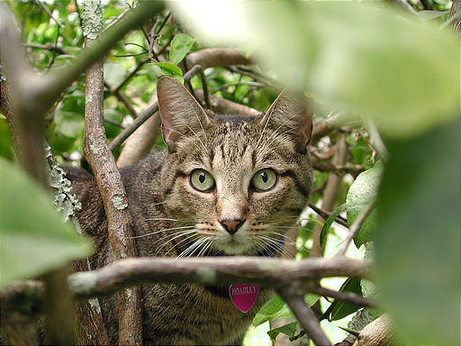

I went on to address the specular highlights to the lower right of the cat's face: spots of sunlit grass that burned out.
These are not as bad, but I noticed them on a 16x20 print I had made and they bothered me, so toned them down a little.
Here are the original (left image) and finished images (right image).
The original tutorial (possibly with updated information) may be found here.